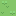
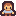
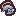
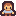
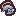
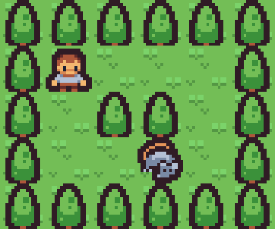
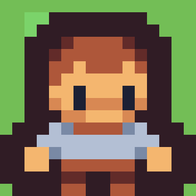
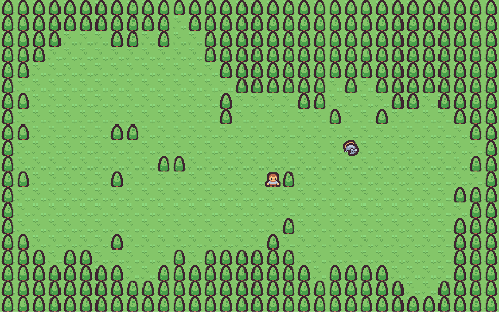

remotes::install_github("matt-dray/tilebased")
tl;dr
An experiment with graphical advancements in tile-based games made for R.
Based tiles
You know by now that R is unequivocally a game engine.
In this vein, Mike Cheng (coolbutuseless) has been hard at work updating the {nara} package, which allows for fast rendering of pixel-based graphics1. This can make games easier to develop, especially in tandem with Mike’s {eventloop} package for reading continuous input from the player’s keyboard.
As a result, I’ve taken some of the ‘engine’ from {r.oguelike}—a toy dungeon-crawling game in an R package2—and made it draw graphics instead of just printing to the console3. The outcome from this test is the demo {tilebased} package.
It also borrows grass, tree, person and rat sprites from Kenney’s free and excellent ‘Tiny’ asset packs. They’re 16×16 pixels, shown here at actual size:
   
 
Very cute.
Install
I put this experiment into an R package so it’s easier to develop and play around with.
But note that the package’s functionality is dependent on your operating system. It’ll work on macOS, but not Windows, due to the required graphics device.
You can install from GitHub like:
As well as {nara} and {eventloop}, it depends on my GitHub-only {r.oguelike} package.
You can then start a game, which opens a graphics device. Use your arrow keys to move around. This will look like the gif at the top of this page.
tilebased::play()As it stands, I haven’t built a proper game-over condition for this experiment. Collide with the enemy and the game will crash (consider this a feature, not a bug!).
Process
The user just sees graphics in a window. The basic process-loop underlying this is roughly:
- Create a ‘board mesh’4, a matrix object that encodes the play-area layout and content.
- Place the player (
@) and enemy (e) actors randomly in a cell (.) of the board mesh, avoiding each other and cells that contain obstacles (#). - Generate a ‘navigation mesh’ that labels each cell with a distance value to the player (i.e. how many tiles away from the player).
- Map the board mesh to pixels of the graphics device, where the board-mesh cell contents define the tiles to be selected for display. Draw the pixels to the device.
- Accept realtime keypress input from the user and move the player, then consequently move the enemy down the distance gradient of the navmesh. Redraw.
- Repeat step 5.
Structures
I think it’s worth explaining a bit more about how the game board is represented, translated and drawn.
Board mesh
The board mesh is a matrix represenation of the board layout and contents.
As a simple example, you could have a 5×6 board-mesh matrix like below, where # is an impenetrable obstacle, . is a traversable floor tile, @ is the player and e the enemy:
[,1] [,2] [,3] [,4] [,5] [,6]
[1,] "#" "#" "#" "#" "#" "#"
[2,] "#" "@" "." "." "." "#"
[3,] "#" "." "#" "#" "." "#"
[4,] "#" "." "." "e" "." "#"
[5,] "#" "#" "#" "#" "#" "#" Board
The board the users actually see is a pixel-based translation of the underlying board mesh.
Each cell of the board mesh is drawn to the screen as tiles. If each tile is 16×16 pixels, then our example board is 80×96 pixels. The upper-left corner of the first tile will be placed at pixel position [1,1]. By extension, the enemy-rat tile in board-mesh cell [4,4] will, for example, occupy the square of pixels at 49 to 64 across and 49 to 64 down.

The tiles themselves are stored as nativeRaster class, which is a matrix format with colour encoded in each cell as integer values.
str(tilebased::grass) 'nativeRaster' int [1:16, 1:16] -9845116 -9845116 -9845116 -9845116 -9845116 -9845116 -9845116 -9845116 -9845116 -9845116 ...
- attr(*, "channels")= int 4These can be overplotted by {nara}, which means we can have grass tiles covering the whole board and partially-transparent tree, player and enemy sprites drawn on top.
library(nara)
plot(tilebased::grass) # place grass first
plot(tilebased::player) # then player over the top
To extend this behvaiour for a more exciting adventure, {tilebased} uses the r.oguelike::create_dungeon() function to create a procedural map that’s randomised with each new game. Here’s a 20×32-tile example:

The next level
For now, I’ve shown it’s possible to convert a board-mesh matrix into tile-based graphics with user control.
A lot of functionality is missing, which prevents this concept from having a true gameloop. I may work to improve this in future.
For example, {r.oguelike} has auto-battling and a basic inventory system to collect gold and food; you can imagine showing these in a graphical overlay. Perhaps there could be doorways to new areas of a larger map. It could also use a larger tileset and make use of ‘compound tiles’ that fit together to produce larger sprites. I could also make my own sprites with help from my {pixeltrix} package.
In addition, I note that Mike is looking at improved sound generation in R. A bangin’ chiptune would complement {tilebased} well, which makes me wonder if a tile-based rhythm game, like Crypt of the Necrodancer, would be possible.
Environment
Session info
Last rendered: 2024-07-14 13:49:17 BSTR version 4.4.0 (2024-04-24)
Platform: aarch64-apple-darwin20
Running under: macOS Ventura 13.2.1
Matrix products: default
BLAS: /Library/Frameworks/R.framework/Versions/4.4-arm64/Resources/lib/libRblas.0.dylib
LAPACK: /Library/Frameworks/R.framework/Versions/4.4-arm64/Resources/lib/libRlapack.dylib; LAPACK version 3.12.0
locale:
[1] en_US.UTF-8/en_US.UTF-8/en_US.UTF-8/C/en_US.UTF-8/en_US.UTF-8
time zone: Europe/London
tzcode source: internal
attached base packages:
[1] stats graphics grDevices utils datasets methods base
other attached packages:
[1] nara_0.1.1.9016
loaded via a namespace (and not attached):
[1] htmlwidgets_1.6.4 compiler_4.4.0 fastmap_1.2.0 cli_3.6.3.9000
[5] tools_4.4.0 htmltools_0.5.8.1 yaml_2.3.8 tilebased_0.3.0
[9] rmarkdown_2.26 grid_4.4.0 knitr_1.46 jsonlite_1.8.8
[13] xfun_0.43 digest_0.6.35 rlang_1.1.4.9000 evaluate_0.23 Footnotes
And has one of the best hex stickers around.↩︎
I’ve written a few posts about {r.oguelike} if you want to learn more.↩︎
I played around with this idea once before, rendering a {r.oguelike} dungeon, player and enemy as isometric-view cubes—thanks to Mike’s {isocubes} package—that the user could move around with keypresses. But a cube only has so much character!↩︎
I’ve borrowed this term from game development but Im’ probably not using it quite right. The idea is that the board and nav meshes are theoretical surfaces that contain data to support the final visual output.↩︎
Reuse
CC BY-NC-SA 4.0